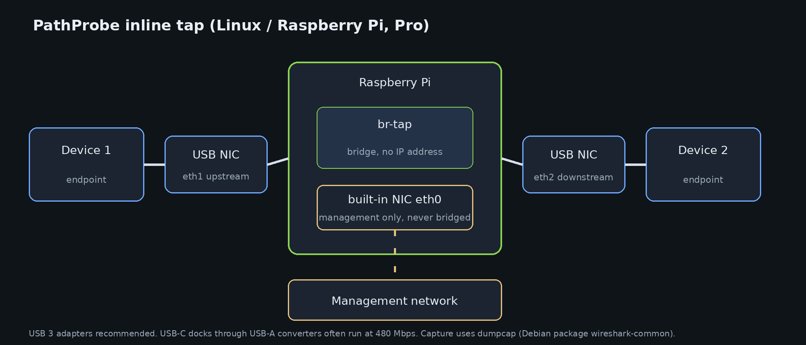

Inline tap guide
The inline tap is a Pro feature and is Linux only (including Raspberry Pi). It is not included in the Windows build. tap status and tap reset can be run on the Free tier so you can inspect or tear down a leftover bridge without a license; tap bridge and tap capture require Pro.
This guide uses documentation addresses only (192.0.2.0/24). Do not copy real IPs, MAC addresses, or hostnames into examples or screenshots you share.
Connection diagram

Download the diagram: SVG · PNG · Markdown copy


What it does
PathProbe builds a Linux bridge named br-tap between two member NICs and captures the traffic that passes through. The bridge itself has no IP address. Frames go through transparently: Device 1 and Device 2 keep talking as if they were connected to each other.
- Create the bridge (
tap bridge) - Capture to a pcapng file (
tap capture --file) - Stream live pcapng to stdout for Wireshark (
tap capture --stdout) - Inspect the setup (
tap status, including--json) - Tear the bridge down and restore each member NIC's pre-bridge flags, including promiscuous mode (
tap reset)
Capture uses dumpcap (Debian and Raspberry Pi OS package wireshark-common). Install it before the first capture. USB 3 adapters are recommended. USB-C NICs that only attach through USB-A converters often run at 480 Mbps; that is expected, not a PathProbe failure.
The Pi (or other Linux host) built-in NIC is management only. Do not add it to the bridge. PathProbe refuses the default-route interface unless you pass --allow-default-route.
Impairment with tc netem (delay, loss, and so on) is a manual Linux technique, not a PathProbe command yet. The examples below apply tc to the bridge member ports.
Commands
Activate a Pro license first on this computer, then:
# Create the transparent bridge (Pro, Linux).
sudo pathprobe tap bridge --upstream eth1 --downstream eth2 --mgmt eth0
# Inspect (Free or Pro).
pathprobe tap status
pathprobe tap status --json
# Capture to a file (Pro). Duration is a Go duration: 20s, not 20.
sudo pathprobe tap capture --file pathprobe-tap.pcapng --duration 30s
# Optional BPF filter (documentation address only).
sudo pathprobe tap capture --file pathprobe-tap.pcapng --filter 'not host 192.0.2.10' --duration 30s
# Live stream to Wireshark on the same computer (pcapng on stdout, logs on stderr).
sudo pathprobe tap capture --stdout --duration 30s 2>tap.log | wireshark -k -i -
# Live stream over SSH to Wireshark on your workstation.
# Use a documentation host (192.0.2.10) in examples; substitute your management address privately.
ssh user@192.0.2.10 'sudo pathprobe tap capture --stdout --duration 30s' | wireshark -k -i -
# Tear down the bridge and restore member NIC flags, including promiscuous mode.
sudo pathprobe tap reset
# If the bridge is already gone, reset is a no-op and does not need root.
pathprobe tap reset
--stdout and --file - are the same: pcapng on stdout. Do not combine --stdout with a real --file path.
Manual impairment with tc netem (not a PathProbe command)
These examples run on the Linux host that owns br-tap. They attach to a member port (eth1 or eth2), not to br-tap itself. You need iproute2 (tc). PathProbe does not add, show, or remove these rules for you.
tc qdisc show dev eth2
# Delay and jitter (100 ms ± 20 ms)
sudo tc qdisc add dev eth2 root netem delay 100ms 20ms
sudo tc qdisc del dev eth2 root
# Loss, duplicate, corrupt, reorder
sudo tc qdisc add dev eth2 root netem loss 1%
sudo tc qdisc add dev eth2 root netem duplicate 1%
sudo tc qdisc add dev eth2 root netem corrupt 0.1%
sudo tc qdisc add dev eth2 root netem delay 10ms reorder 5%
sudo tc qdisc del dev eth2 root
# Rate limit with Token Bucket Filter (tbf), 10 Mbit/s
sudo tc qdisc add dev eth2 root tbf rate 10mbit burst 32kbit latency 50ms
sudo tc qdisc del dev eth2 root
There can be only one root qdisc at a time; tc qdisc del dev eth2 root removes whatever you installed.
Optional Linux inspection
ip -br link
bridge link
bridge fdb show br br-tap
ip -br addr show br-tap
sudo tcpdump -n -i br-tap -c 20 'icmp or arp'
ip -br addr show eth0
Reset and cleanup
pathprobe tap reset deletes br-tap and restores saved pre-bridge flags on the member NICs. After reset, give NetworkManager (or your DHCP client) a chance to recover an address on a member NIC that should be used again. Do not add the management NIC to the bridge, and do not apply netem on the management NIC.
Buy PathProbe Pro: https://getpathprobe.com/#pricing. Download: PathProbe 1.2.2.